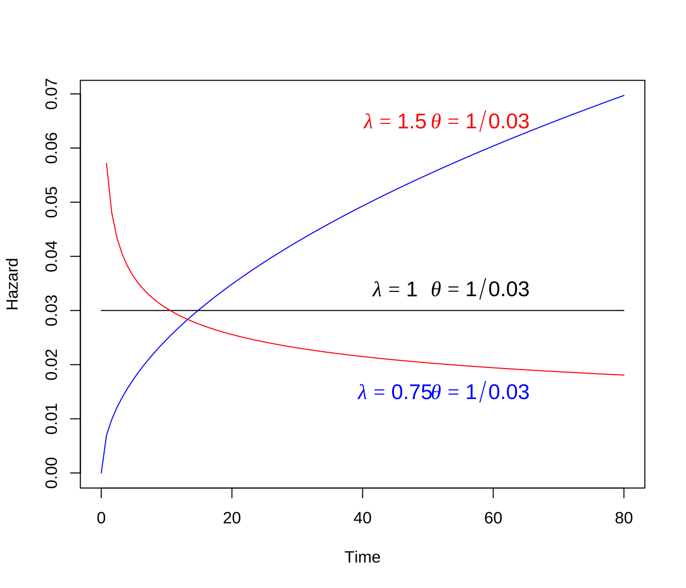
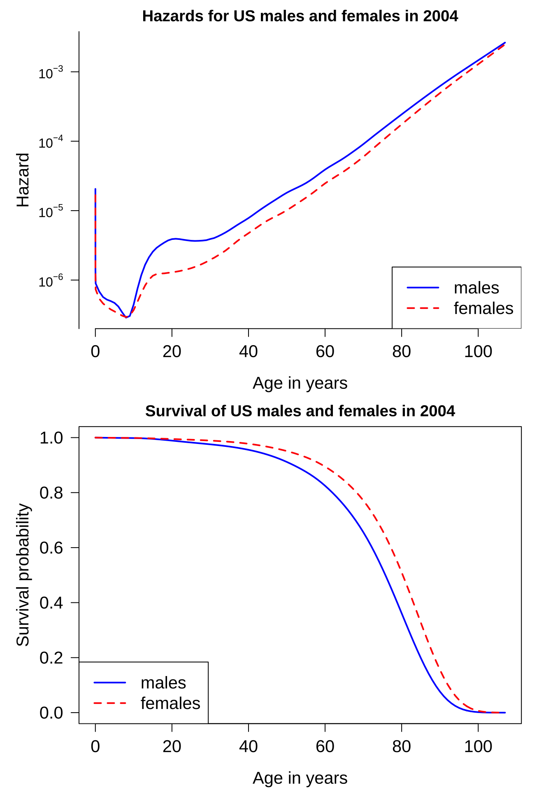

제 1 장 생존함수와 위험함수
1.1 생존함수와 위험함수
확률변수 \(T\)를 생존시간이라고 하고 \(f(t)\)를 확률밀도함수라고 하자. \(T\)의 누적분포함수(cumulative distribution function; CDF)는 다음과 같이 정의된다.
\[ F(t) = P(T \le t) = \int_0^t f(t) dt \]
또한 생존함수(Survival function)은 다음과 같이 정의된다.
\[ S(t) = P (T > t) = 1-F(t) \]
위험함수(hazrd function)의 정의는 다음과 같으며 만약 생존시간이 \(t\) 보다 클때 바로 사망할 확률을 의미하며 순간위험율(instantaneous failure rate)이다.
\[\begin{align} h(t) & = \lim_{dt \rightarrow 0} \frac{ P(t < T \le t+ dt | T > t) }{dt} \\ \notag & = \lim_{dt \rightarrow 0} \frac{1}{dt} \frac{P(P(t < T \le t+ dt )}{P(T >t)} \\ \notag & = \frac{f(t)}{S(t)} \tag{1.1} \end{align}\]위험함수의 의미를 좀더 자세히 알아보자.
위험함수는 아주 짧은 시간에 일아날 사건의 확률로서 순간적인(instantaneous)인 의미를 가진다. 정의에서 보듯이 아주 짧은 시간에 일어나는 극한(\(lim_{dt \rightarrow 0}\))의 의미이다.
위험함수는 확률로서 정의되지만 발생율(rate)로 이해할 수 있다. 위험함수를 정의에서 분모는 확률이고 분자는 시간으로 표시되기 때문에 마차 단위 시간당 일어나는 발생율로 이해할 수 있다. 또한 위험함수의 값은 [0,1] 사이에 있는 것이 아니기 때문에 단위 시간당 발생율로 이해하는 것이 편리하다 (\(h(t) \ge 0\)).
위험함수는 조건부 확률로 정의되어 있다. 즉, 모든 개체에 대한 사건이 아니라 시간 \(t\)까지 살아있는 개체들에 대한 위험율이다.
생존분석에서는 생존함수보다 위험함수가 더 큰 의미를 가진다. 위험함수가 시간에 따라서 변하는 추세는 시간에 따른 위험의 변화를 나타내기 때문에 생존함수보다 위험의 변화에 대한 정보를 잘 파악할 수 있다.

위험함수와 생존함수의 관계
생존함수와 위험함수는 다음과 같은 관계를 가지고 있다.
\[\begin{align*} h(t) & = \frac{f(t)}{S(t)} \\ & = \frac{f(t)}{1-F(t)} \\ & = - \frac {\partial}{\partial t} \log [1-F(t)] \\ & = - \frac {\partial}{\partial t} \log S(t) \end{align*}\]따라서 다음의 관계가 성립힌다.
\[ S(t) = exp[-H(t)] \] 여기서 \[ H(t) = \int_0^t h(t) dt \] 이며 \(H(t)\)를 누적 위험함수(cumulative hazard function)라고 한다.
위의 식에서 볼 수 있듯이 위험함수를 알면 생존함수를 쉽게 구할 수 있고 또한 반대로 생존함수를 알면 위험함수를 자동적으로 알게된다.
1.2 위험함수의 형태
앞에서 언급했듯이 위험함수는 시간에 따른 위험의 변화를 말해준다. 생존분석에서 중요한 분포들과 예제를 가지고 다양한 위험함수의 형태를 알아보자.
예제 1.1 (지수분포) 만약 생존시간 \(T\)가 지수분포(Exponential distribution)을 따른다고 하자.
\[ f(t; \lambda) = \lambda e^{-\lambda t} \]
위에서 \(\lambda\) 는 흔히 단위시간 당 사망률, 실패율(failure rate)라고 부르며 \(E(T) = 1/\lambda\)이다.
생존함수(survaival function)와 위험함수(hazard function)은 다음과 같이 주어진다.
\[\begin{align*} S(t) & = P(T>t) = 1 - P(T \le t) \\ & = 1 - \int_0^t \lambda e^{-\lambda t} \\ & = 1 - (1-e^{-\lambda t} ) \\ & = e^{-\lambda t} \\ h(t) & = \frac{f(t)}{S(t)} \\ & = \lambda e^{-\lambda t} / e^{-\lambda t} \\ & = \lambda \end{align*}\]
누적위험함수는 아래와 같다. \[ H(t) = \int_0^t h(t) dt = \lambda t \]
생존시간이 지수분포를 따른다면 위험함수는 시간에 관계없이 상수 \(\lambda\)이다. 이렇게 시간에 따라서 위험함수가 상수인 경우는 현실에서는 거의 나타나지 않는다. 위험함수가 상수라는 것은 시간이 지나도 (1) 제품이 고정날 또는 (2) 사람이 사망할 위험성이 변허지 않는다는 의미이다.
지수분포는 생존분석에서 중요한 의미를 가진다. 즉, 생존시간이 지수분포를 따르면 개체는 얼마나 시간이 경과했는지 정보가 없다는 것이며 주어진 시각에 사건이 일어나지 않았다면 바로 다음 시간에 사건이 일어날 확률은 언제나 동일하다. \(\blacksquare\)
예제 1.2 (와이블분포) 만약 생존시간이 와이블 분포(Weibull distribution)를 따른다면 확률밀도함수는 다음과 같다.
\[ f(t) = \frac{\lambda t^{\lambda-1}}{\theta^\lambda} \exp \left[ - \left(\frac{t}{\theta} \right)^\lambda \right], \quad \theta,\lambda>0, t \geq 0. \]
평균은 \(E(T)=\theta \Gamma(1+1/\lambda)\) 이다. 여기서 \(\lambda=1\)이면 지수분포가 된다.
이때 생존 함수는 다음과 같다. \[\begin{eqnarray*} S(t) &=& 1-\int_0^t \frac{\lambda t^{\lambda-1}}{\theta^\lambda} \exp \left[ - \left( \frac{t}{\theta} \right)^\lambda \right] dt \\ &=& \exp \left[ - \left( \frac{t}{\theta} \right)^\lambda \right]. \end{eqnarray*}\]
또한 위험함수는 다음과 같다. \[\begin{eqnarray*} h(t) &=& \frac{f(t)}{S(t)} \\ &=& \frac{\frac{\lambda t^{\lambda-1}}{\theta^\lambda} \exp \left[ - \left( \frac{t}{\theta} \right)^\lambda \right]}{\exp \left[ - \left( \frac{t}{\theta} \right)^\lambda \right]} \\ &=& \left( \frac{\lambda }{\theta^\lambda} \right) t^{\lambda-1}. \end{eqnarray*}\]
위에서 볼 수 있듯이 \(\lambda=1\)이면 지수분포가 되고 위험함수는 상수이다. 만약에 \(\lambda>1\)이면 위험함수는 시간에 따라 증가하며 \(\lambda<1\)이면 위험함수는 감소한다.
누적위험함수는 아래와 같다. \[ H(t) = \int_0^t h(t) dt = (t/\theta)^\lambda \]
다음은 모수의 변화에 따른 와이블 분포의 위험함수이다.
weibHaz <- {function(x, shape, scale) dweibull(x, shape=shape,
scale=scale)/pweibull(x, shape=shape, scale=scale, lower.tail=F)}
curve(weibHaz(x, shape=1.5, scale=1/0.03), from=0, to=80,
ylab='Hazard', xlab='Time', col="blue")
curve(weibHaz(x, shape=1.0, scale=1/0.03), from=0, to=80,
ylab='Hazard', xlab='Time', add=T, col="black")
curve(weibHaz(x, shape=0.75, scale=1/0.03), from=0, to=80,
ylab='Hazard', xlab='Time', add=T, col="red")
text(45, 0.065, expression(lambda == 1.50), col="red", cex=1.3)
text(58, 0.065, expression(theta==1/0.03), col="red", cex=1.3)
text(45, 0.015, expression(lambda == 0.75), col="blue", cex=1.3)
text(58, 0.015, expression(theta==1/0.03), col="blue", cex=1.3)
text(45, 0.034, expression(lambda== 1.00), col="black", cex=1.3)
text(58, 0.034, expression(theta==1/0.03), col="black", cex=1.3)
\(\blacksquare\)
tm <- c(0, # birth
1/365, # first day of life
7/365, # seventh day of life
28/365, # fourth week of life
1:107) # subsequent years
hazMale <- as.numeric(survexp.us[,"male","2004"]) # 2004 males
hazFemale <- as.numeric(survexp.us[,"female","2004"]) # 2004 females
tm.diff <- diff(tm)
survMale <- exp(-cumsum(hazMale*tm.diff)*365.24)
survFemale <- exp(-cumsum(hazFemale*tm.diff)*365.24)
# Figure 2.1.2 log hazard and survival for US males and females in 2004
par(mfrow=c(2,1), # two rows and one column of plots
mar=c(4.2,5,2,2)) # set margins for the lower, left, top, and righ of each plot
logHazMale <- log(hazMale)
logHazFemale <- log(hazFemale)
plot(logHazMale ~ tm[-1], type="l",
xlab="Age in years", # x axis label
ylab="Hazard",col="blue", # y azis label
lwd=2, # double line width
las=1, # make y axis labels perpendicular to axis
axes=F, cex.lab=1.3, cex.axis=1.3) # make blue line solid
lines(logHazFemale ~ tm[-1],type="l",
col="red",lwd=2, lty=2) # add a red dashed line to the plot
yyLabs <- c(1e-07, 1e-06, 1e-05, 1e-04, 1e-03, 1e-02)
yyLabsLog <- log(yyLabs)
axis(2, at=yyLabsLog, labels=c(expression(10^-7), expression(10^-6),
expression(10^-5), expression(10^-4), expression(10^-3), expression(10^-2)), las=1)
axis(1, cex.axis=1.3)
legend("bottomright", legend=c("males","females"),
lty=c(1,2), col=c("blue","red"), lwd=2, cex=1.3)
title("Hazards for US males and females in 2004")
tm.diff <- diff(tm) # same length as "tm"
survMale <- exp(-cumsum(hazMale*tm.diff)*365.24) # survival probs for males
survFemale <- exp(-cumsum(hazFemale*tm.diff)*365.24) # survival probs for females
#windows(width=7,height=5)
plot(survMale ~ tm[-1],type="l", # lower case "L" indicates line plot
xlab="Age in years", # x axis label
ylab="Survival probability", # y azis label
col="blue", # line color
lwd=2, # double line width
las=1, # make y axis labels perpendicular to axis
ylim=c(0,1), cex.lab=1.3, cex.axis=1.3) # y axis limit ranges from 0 to 1
lines(survFemale ~ tm[-1], col="red", lwd=2, lty=2) # add a red dashed line to the plot
legend("bottomleft", legend=c("males","females"),
lty=c(1,2), col=c("blue","red"), lwd=2, cex=1.3)
title("Survival of US males and females in 2004")
\(\blacksquare\)
1.3 평균 생존시간과 중위 생존시간
평균 생존시간 \(\mu\) 다은과 같이 정의된다.
\[ \mu = \int_{0}^\infty t f(t) dt \]
잘 알려진 생존함수의 공식 \(f(t) = dS(t)/dt\)와 부분 적분 공식(integration by part)를 이용하면
평균 생존시간 \(\mu\) 다은과 같이 구할 수 있다.
\[ \mu = \int_0^\infty S(t)dt \] 중위 생존시간은 \(t_{med}\) 다음 방정식을 만족하는 \(t\)의 값이다.
\[ t_{med} = \inf ~ \{t~|~ S(t) \le 1/2 \} \]
1.4 임의중도절단
중도 절단 자료
생존시간 \(T_1, T_2, \dots, T_n\)을 독립적으로 분포 \(f_\theta(t)\)에서 추출하였다고 가정하고 중도절단시간 \(C_1, C_2, \dots, C_n\)도 독립적으로 분포 \(g(c)\)에서 추출하였다고 가정하자.
생존시간 \(T\)와 중도절단시간 \(C\)가 서로 독립이라고 가정하며 이러한 가정을 임의 중도절단(random censoring)이라고 한다.
이제 관측한 생존시간 \(X_i\)는 다음과 같이 정의한다.
\[ X_i = \min (T_i, C_i) \quad i=1,2,\dots, n \]
또한 절단 표시변수 \(\delta_i\)는 다음과 같이 정의한다. 표시변수 \(\delta_i\) 가 1의 값을 가지면 실제 생존시간을 관측한 것이고 0이면 절단된 자료이다.
\[ \delta_i = \begin{cases} 1 & T_i < C_i \\ 0 & T_i > C_i \end{cases} \]
따라서 중도절단이 있는 자료는 다음과 같은 각 개체에 대한여 쌍으로 구성된 관측값이 얻어진다.
\[ (X_1, \delta_1), (X_2, \delta_2), \dots, (X_n, \delta_n) \]
1.5 모수의 최대가능도 추정
이제 생존시간 \(T\)의 분포 \(F_\theta(t)\) 가 주어졌을 때 표본 \((x_i, \delta_i)\)의 가능도 함수 \(L\) 는 다음과 같이 나타낼 수 있다.
\[ L(\theta; x, \delta) = \prod_{i \in UC} P_\theta(T_i= x_i ) \prod_{i \in C} P_\theta(T_i > x_i ) = \prod_{i \in UC} f_\theta( x_i ) \prod_{i \in C} [1-F_\theta( x_i )] \]
여기서 집합 \(UC\)는 실제 생존시간이 관측된 자료들, 집합 \(C\)는 중도절단된 자료을 의미한다.
모수의 최대가능도 추정은 \(L(\theta; X, \delta)\)를 최대로 하는 \(\theta\)를 찾는 방법이다.
이제 예제로서 생존시간의 분포가 지수분포를 따른다고 가정하고 가능도함수를 구해보자.
\[\begin{align*} L(\lambda; x, \delta) & = \prod_{i \in UC} P_\lambda(T_i= x_i ) \prod_{i \in C} P_\lambda(T_i > x_i ) \\ & = \prod_{i \in UC} f_\lambda( x_i ) \prod_{i \in C} [1-F_\lambda( x_i )] \\ & = \prod_{i=1}^n \left [ \lambda e^{-\lambda x_i} \right ]^{\delta_i} \left [e^{-\lambda x_i} \right ]^{1-\delta_i} \\ & = \prod_{i=1}^n \lambda^{\delta_i} e^{-\lambda x_i} \\ & = \lambda^{ \sum_{i=1}^n \delta_i} e^{-\lambda \sum_{i=1}^n x_i} \end{align*}\]
이제 위의 가능도함수를 최대화하는 모수를 찾기위하여 로그가능도함수를 고려하고
\[ \ell (\lambda; x, \delta) = \log L(\lambda; x, \delta) = \log \lambda \sum_{i=1}^n \delta_i - \lambda \sum_{i=1}^n x_i \]
로그가능도함수를 모수 \(\lambda\)에 대하여 미분하고 0으로 놓고 풀면 최대가능도 추정량을 구할 수 있다.
\[ \frac{\partial}{\partial \lambda} \ell (\lambda; x, \delta) = \frac{\sum_{i=1}^n \delta_i}{\lambda} - \sum_{i=1}^n x_i = 0 \] 따라서 최대가능도 추정량은 다음과 같이 주어진다. \[ \hat \lambda_{ML} = \frac{\sum_{i=1}^n \delta_i}{\sum_{i=1}^n x_i} \]
만약 중도절단자료가 없다면 최대가능도 추정량은 일반적인 경우와 같이 다음과 같다.
\[ \hat \lambda_{ML} = \frac{n}{\sum_{i=1}^n x_i} \]